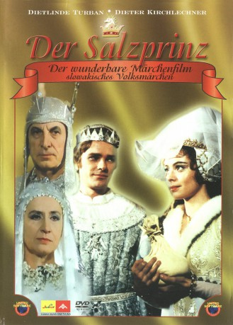

#12228 Der Salzprinz
Alternativ: Salt & Gold (Englischer Titel)
 
 IMDB-Wertung: 7.0 / 10
IMDB-Wertung: 7.0 / 10  Metascore: 0
Metascore: 0 
Ein Film nach Motiven eines slowakischen Volksmärchens. Prinzessin Maruschka verleibt sich in den Sohn des Salzkönigs und erntet damit Spott und Verachtung bei ihrem Vater, dem König, und ihren Landsleuten, die von Gold und Edelsteinen verblendet sind. Erst als der Salzkönig einen furchtbaren Fluch über die Menschen schickt, erkennen sie den Wert des scheinbar so wertlosen Salzes. An Maruschka ist es nun, ihr Volk zu erlösen.
Jahr: 1983
Dauer: 84 Minuten
FSK: 0
Land: Tschechoslowakei Studio: MC-OneTonspuren:
Untertitel:
Auflösung: 720p (952x720) Größe: 1699 MB
Genre: Komödie, Abenteuer, Fantasy, Familie, Liebe
Regisseur: Martin Hollý
Drehbuch: Bozena Nemcová, Martin Hollý, Peter Kovacik
Soundtrack: Karel Svoboda
Darsteller:
- Libuse Safránková als princezna Maruska
- Karol Machata als král Pravoslav
- Ladislav Chudík als Král podzemí
- Dietlinde Turban als princezna Barbora
- Lubomír Paulovic als princ Kazimír
- Zuzana Kocúriková als princezna Vanda
- Juraj Kukura als král Norbert
- Dieter Kirchlechner als Argonit
- Jozef Kroner als Sasek
- Vlasta Fabiánová als Pestounka
- Ján Kramár als Velitel stráze
- Gábor Nagy als Solný princ
- Viera Strnisková als Matka víl
- Tibor Bogdan als Rádce
- Anton Sulik als Kuchar
- Juraj Paska Sr. als Ceremoniár
- Anton Korenci als Pokladník
- Ivan Krivosudsky als Zahradník
- Milan Kis als Klenotník
- Jaroslav Rozsíval als Obchodník se solí
- Boris Farkas als Foreign Prince (uncredited)
- Peter Rasev als (uncredited)
- Marek Skarpa als (uncredited)
Datei: X:\Märchen\Salzprinz, Der (1983, FSK0, 952x720).mkv seit 30.12.2019
Festplatte: Kinder-Filme+Trick
 Es gibt insgesamt 61 Filme in der Gruppe 'Märchen'
Es gibt insgesamt 61 Filme in der Gruppe 'Märchen'